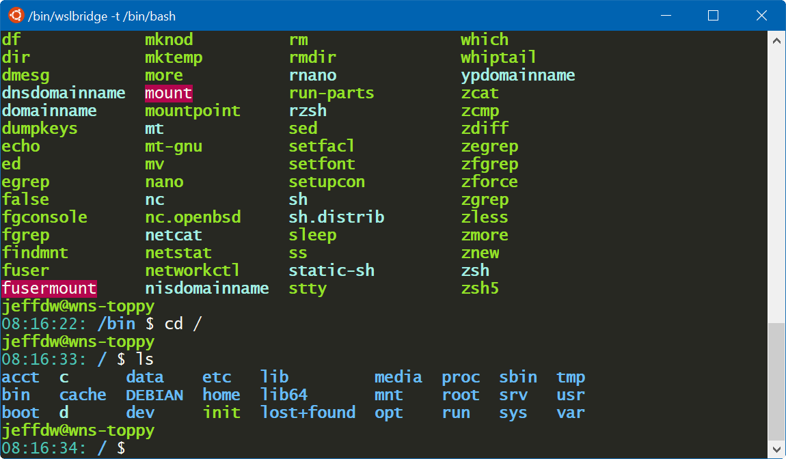

Elixir on Windows Subsystem for Linux
Jeff DeWall 4 min read July 18, 2017 #ElixirLately I've been doing a lot of elixir and phoenix programming while working on some hobby projects. I'm using a phoenix app as my backend server, serving up an API that is consumed by Xamarin.Forms based apps on Android and iOS.
On Windows I've been using Git Bash (based on MinGW) for a bash shell for a long time and there the interactive elixir shell has had some downsides. In particular, I wasn't able to get command history with iex working and color output was missing as well. Now with the Linux Subsystem for Windows available, also called WSL, you can get the best of linux development on your Windows machine.
While initially trying elixir development using the linux version on Windows, I was worried how I might access the Erlang observer or debugger, which require GUIs, but with an extra X Server started, you can get it working without any problems.
Installing WSL and Elixir
You can follow the Microsoft documentation for installing WSL
Soon you'll be able to choose the linux distro you want to install (Insider builds already can), but I'm using the vanilla Ubunutu install.
With your shiny real Ubuntu bash prompt, you can then install any packages you need with apt-get. For elixir run the following:
sudo apt-get install esl-erlang elixir
Note that this will install a bunch of GTK dependencies which are part of showing the Erlang debugger and observer.
If you run iex and try to start the observer, you'll see the following (Note: I've modified the formatting for the blog a bit):
Erlang/OTP 19 [erts-8.3] [source-d5c06c6] [64-bit] [smp:4:4] [async-threads:10]
[hipe] [kernel-poll:false]
Interactive Elixir (1.4.4) - press Ctrl+C to exit (type h() ENTER for help)
iex(1)> :observer.start
07:58:54: Error: Unable to initialize GTK+, is DISPLAY set properly?
{:error,
{{:einval, 'Could not initiate graphics'},
[{:wxe_server, :start, 1, [file: 'wxe_server.erl', line: 65]},
{:wx, :new, 1, [file: 'wx.erl', line: 115]},
{:observer_wx, :init, 1, [file: 'observer_wx.erl', line: 104]},
{:wx_object, :init_it, 6, [file: 'wx_object.erl', line: 355]},
{:proc_lib, :init_p_do_apply, 3, [file: 'proc_lib.erl', line: 247]}]}}
iex(2)>
Installing an X Server
To fix this we need to install an X Server on Windows which can draw our GUIs and let the terminal know about it.
The VcXSrv project is an implementation that I've been using that works quite well: VcXSrv
With the VcXSrv started you'll have an icon in your tray to let you know it's running but we still need to let WSL know about it by exporting the display variable:
export DISPLAY=:0
With that set, you can start the observer or debugger from iex:
Interactive Elixir (1.4.4) - press Ctrl+C to exit (type h() ENTER for help)
iex(1)> :observer.start
:ok

iex(2)> :debugger.start
{:ok, #PID<0.100.0>}
Better color and copy/paste support: WSLtty
I am used to using ctrl+ins and shift+ins for copying/pasting from the shell but I wasn't able to get this working in the vanilla Bash on Windows. Luckily there is a mintty based project called wsltty that works perfectly with WSL. Using wsltty I now have full 256 color support and ctrl+ins/shirt+ins pasting. You can grab wsltty from WSLtty Project
Then rather than the normal shortcut You can use the WSLtty one. There are a few variants but I use: 'WSL Bash % in Mintty'
Some config steps for WSL
Since WSLtty is based on mintty, you can use a mintty config file to setup nicer colors. I use a monokai-ish like color scheme. You can place the following config options in the file: c:\Users\<Your User Name>\AppData\Roaming\wsltty\config
ForegroundColour=248,248,242
BackgroundColour=39,40,34
CursorColour=253,157,79
Black=39,40,34
BoldBlack=117,113,94
Red=180,6,78
BoldRed=249,38,114
Green=102,172,24
BoldGreen=146,226,40
Yellow=220,149,59
BoldYellow=244,191,117
Blue=33,159,243
BoldBlue=102,187,250
Magenta=126,51,255
BoldMagenta=174,129,255
Cyan=75,197,180
BoldCyan=161,239,228
White=248,248,242
BoldWhite=249,248,245
BoldAsFont=-1
AllowBlinking=yes
CursorType=block
BoldAsFont=yes
Transparency=low
#Font=Consolas
FontHeight=12
FontSmoothing=full
AllowBlinking=yes
OpaqueWhenFocused=yes
CursorType=block
Transparency=low
You'll end up with a terminal that looks like this:
